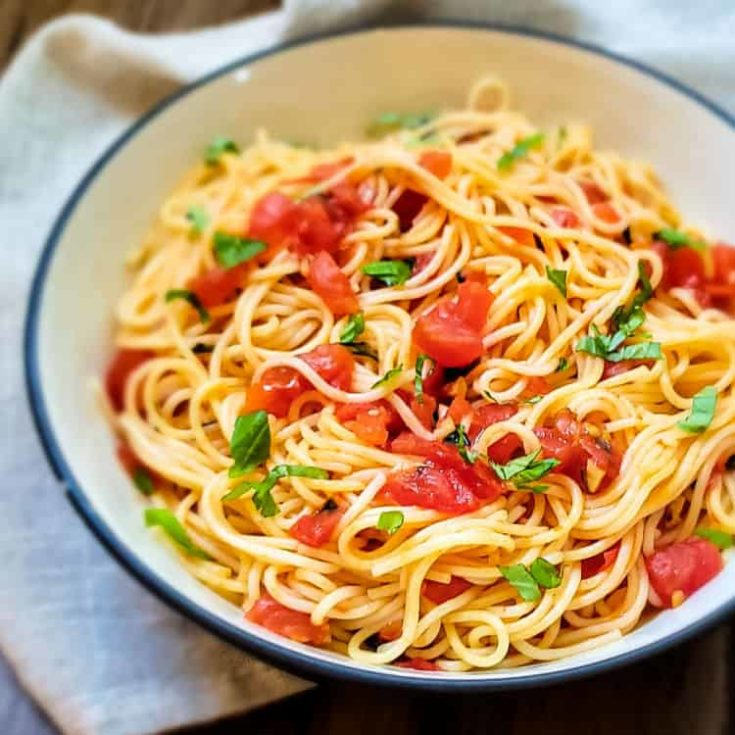

Capellini Pomodoro

Description
Pasta pomodoro is an Italian food typically prepared with
pasta, olive oil, fresh tomatoes, basil, and various other fresh ingredients.
It is intended to be a quick and light dish, rather than a dish in a heavy sauce.
Capellini Pomodoro is a delightful Italian pasta dish featuring thin,
angel hair-style noodles known as “capellini” or “little hairs” in Italian.
Ingredients
- 1 ½ pounds Roma tomatoes
- 1 pound capellini pasta
- 2 tablespoons unsalted butter
- 4 cloves garlic, minced
- Salt and freshly ground black pepper to taste
- 4 leaves basil, thinly sliced
- ¼ cup grated Parmesan cheese
Steps
- Bring a large pot of lightly salted water to a boil. Fill a large bowl with ice and cold water.
- Score a shallow "x" in the bottom of the tomatoes.
Add tomatoes to the boiling water and cook uncovered until skin starts to peel off, about 1 minute.
Drain in a colander and immediately immerse in ice water for several minutes to stop the cooking process.
Peel tomatoes.
Transfer peeled tomatoes to a food mill, and process until smooth.
- Meanwhile, bring a large pot of lightly salted water to a boil.
Cook angel hair pasta in the boiling water, stirring occasionally, until tender yet firm to the bite, 4 to 5 minutes.
Drain, saving 1/4 cup of the pasta water for the sauce.
- While pasta cooks, melt butter in a large skillet over low heat.
Add garlic and salt and cook until fragrant, 1 to 2 minutes.
Add pureed tomatoes and as much pasta water as desired. Simmer until thickened, 3 to 5 minutes.
Season with salt and pepper to taste.
- Divide pasta amongst 4 serving bowls.
Top with tomato sauce, parmesan cheese and sprinkle with fresh basil.
Serve immediately.